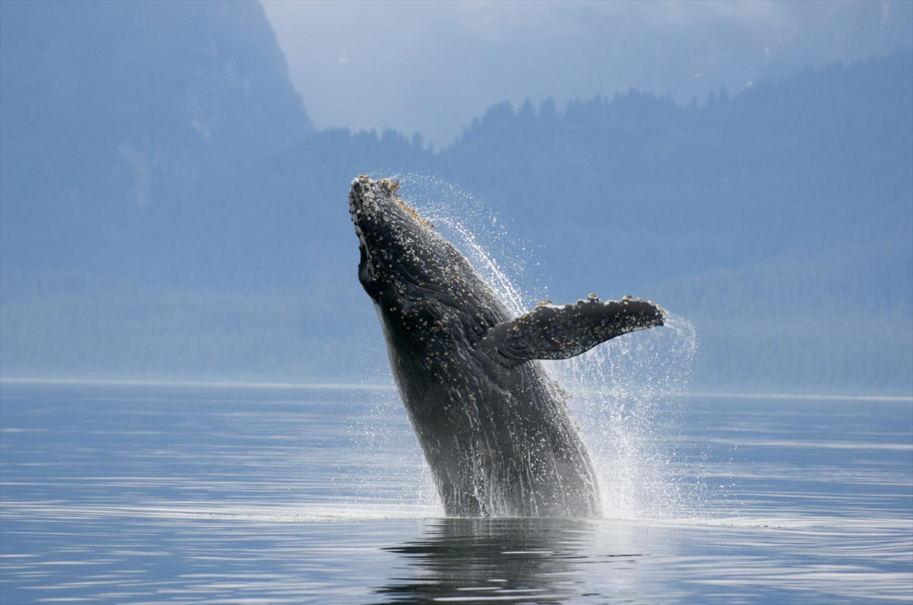
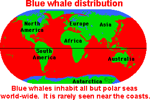

The number of blue whales in the world has reduced due to commercial whaling, which signifanctly reduced their numbers during the early 1900s. However, the population has been increasing globablly after blue whales were listed as endangered under the Endangered Species Act.
Vessel strikes can injure or even kill blue whales. Vessel strikes have killed blue whales throughtout various locations, but the risk is much higher in some coastal areas where ships pass by
Many blue whales become entangled in fishing gear where they swim with the gear attached to them or even possibly becoming anchored. Blue whales can be entangled with different types of fish gear, and once they are entangled they may swim with the gear attached to them for long periods of time which then cause fatigue, compromised feeding ability, or severe injury, which leads to these whales not surviving.
| Food | Locations | Threaths |
|---|---|---|
| Krill | Southern Hemisphere | Vessel Strikes |
| Copepods | Northern Hemishpere | Entanglement |